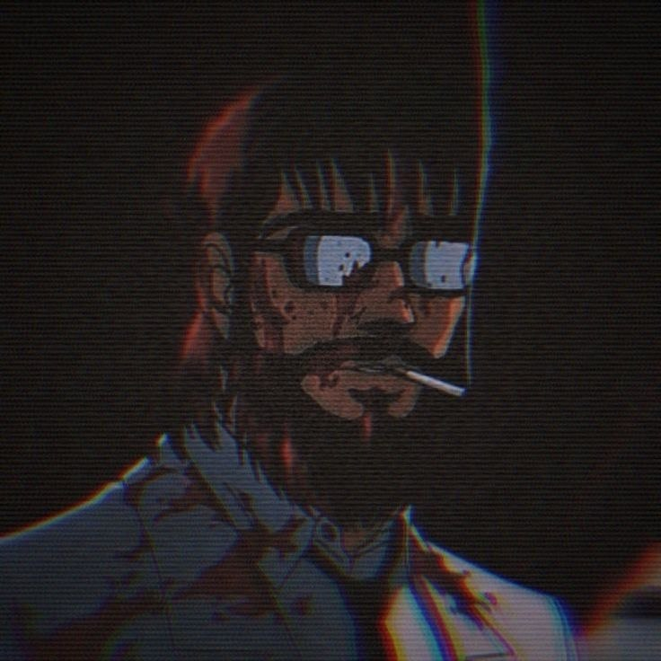
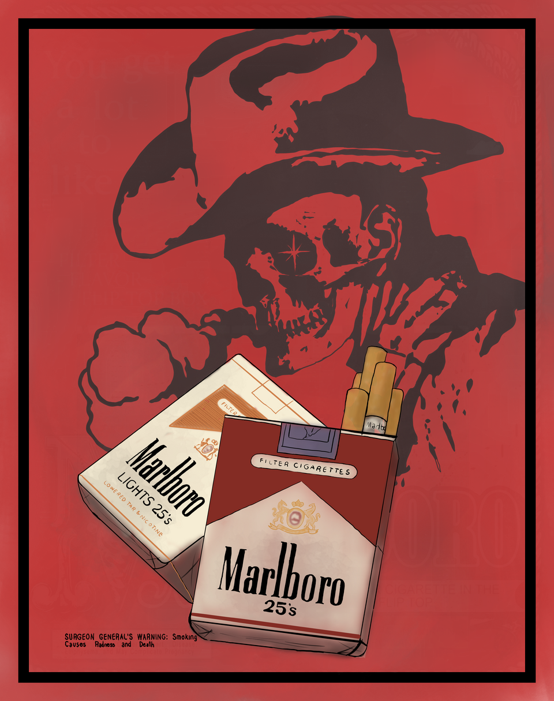
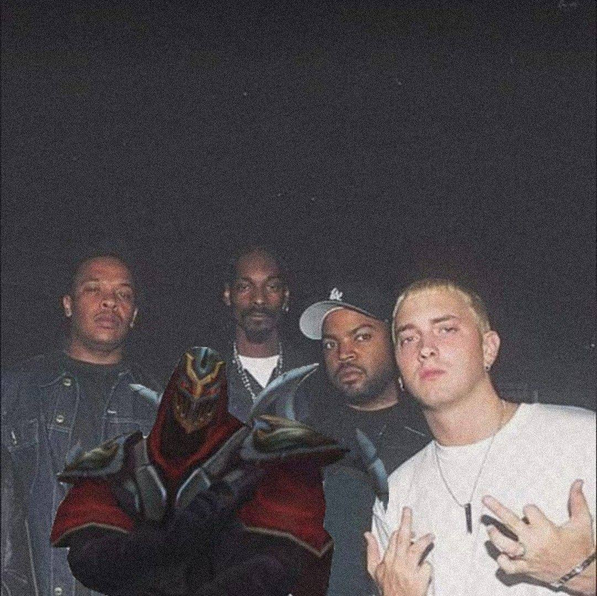
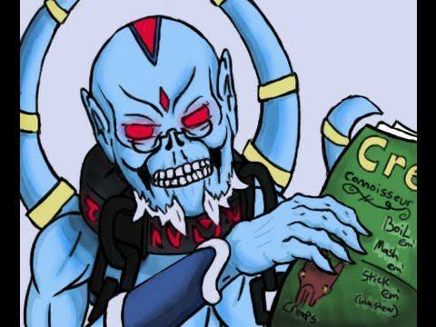
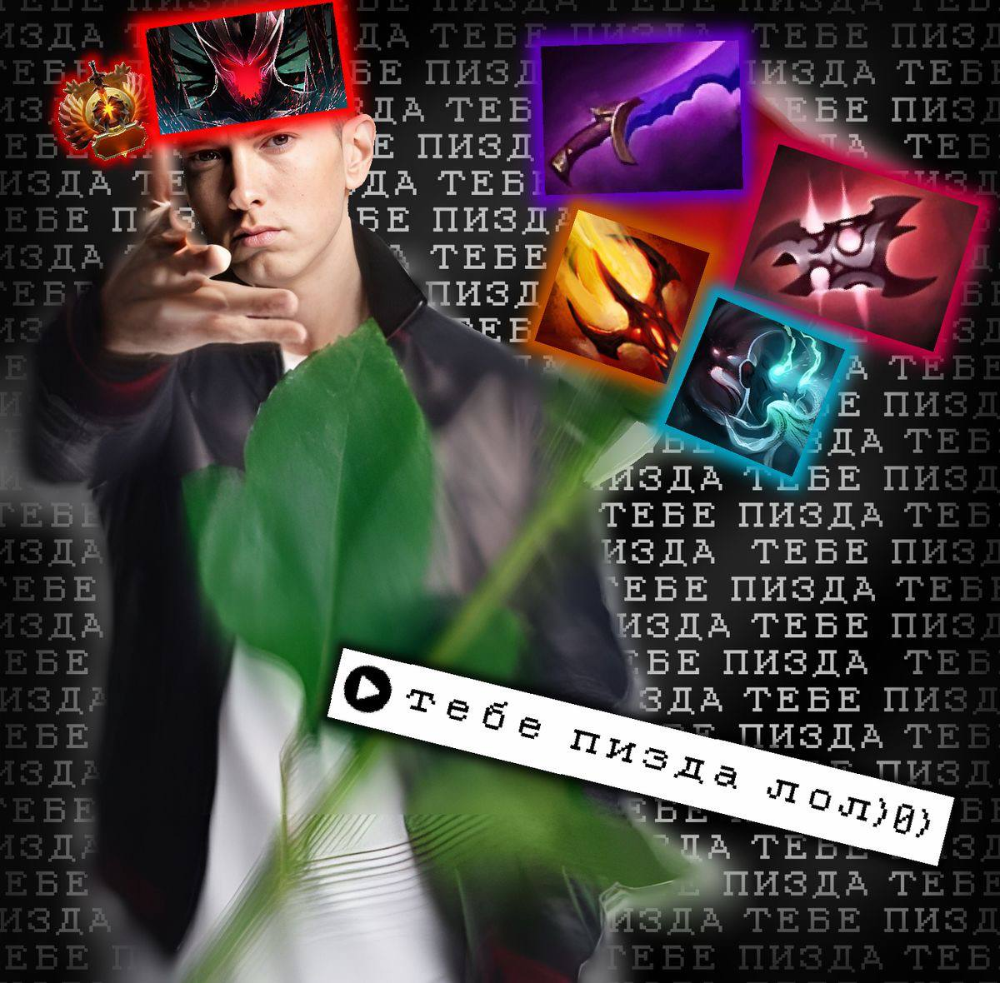

МОЯ ЗАЛУПНАЯ СТРАНИЧКА СО ВСЯКИМИ ЗАПИСЬКАМИ
"Каждый день я просыпаюсь с одной мыслью, которая не
даёт мне покоя: А нахуя я проснулся?"
Мои мысли вслух
Здесь будет контент, который заставит тебя задуматься о том, зачем ты вообще родился.

Дэвид Далласберг
вип-казах но без кобальта и айкоса, актёр кино под названием "Жизнь - кал", амбассадор по плагиату royalty-free контента, ваш личный психолог без лицензии но с бокалом праги и винстоном с кнопкой, суицидник который не смог... 6 раз блять, вроде блоггер, вроде стример, а вроде долбоёб, кмс по инту, программист по неволе
Зовут меня Дэвид Далласберг. Мне уже за двадцатку, но ною я как пубертатная целка с женским максимализмом в жопе. По профессии вроде как и программист, а вроде как просто геймер-алкаш со стажем. Всё просто, моя учёба это ёбаная фикция, я нигде не работаю, а то что у меня в любой непонятной ситуации находятся деньги, лишь совпадение.
Я ненавижу свою жизнь, потому что:
- Я - ёбаная бездарность которая не умеет ничего (не считая физического труда и насилия, так как у меня не было выбора).
- Я - асоциальное хуйло, которое не может нормально разговаривать с людьми, потому что я словно ёбаный чат бот, который не умеет выбирать параметры стиля общения. Таким образом я спокойно могу спиздануть что-то, за что в ту же секунду могу получить по ёбалу, либо же стать настоящим убежищем (убежищем) для всех кто услышит.
- Я - бесперспективный биомусор, который ничего не делает, кроме как существует.
- Я - хуёвый друг, по крайней мере так обо мне отзывается большая часть людей которые так или иначе со мной общались и дружили.
- Я - умер в 2012м, да может звучать странно, но я стал дединсайдом ещё до нынешней тенденции, а ныне я просто кекаю и лишний раз тыкаю мамкиных zxc гулей, которые только научились пользоваться пенисом, прямо в говно.

Спонсор моего хорошего настроения, а также прекрасный домкрат для поехавшей психики - сигареты Marlboro.
Marlboro - дешевле чем феназепам, а ты - всё равно сдохнешь.
Ибо я никогда не воспринимал электронные пиписьки, курительные тампоны, сосание кальянов. И считаю то что те кто этим промышляют, тупые ебаклаки, потому что:
- Типа это менее вредно — ага, зато ещё 18 нет, уже с вечно слюнявой флешкой во рту, на губах то ли глицерин, то ли предэякулят вишнёвой свежести. Секс не предлагаю, ты уже сосёшь.
- Типа это круто и модно — ох ебать, особенно когда пыхаешь на перерывах с выражением лица, как будто делаешь минет будущему парню. Ведь да, ты априори пидарас.
- Типа это статусно — статусно? Твой статус зависит от того, сколько мама скинула на обеды. Ну, или сколько ты на донат в игру не потратил.
- Типа сигареты — это кал и невкусно, а дуделки — это вкусно — говорят, говно тоже с приправами норм, хошь попробовать? У тебя же уже есть опыт — разница лишь в аромате.
Я курю сигареты не только потому что хочу умереть, а потому что всё остальное — ещё большая помойка.
Я хотя бы честно дохну, без вкуса бабл-гам и иллюзий о здоровье. Потому что, в отличие от вас, я хотя бы не вру себе, что это "для удовольствия".
Я знаю, зачем я это делаю. А ты — просто вейповый NPC на подзарядке. Что? Давай давай, иди ищи зарядку, у тебя подик разрядился!
Bro hell nah, я не заебусь об этом говорить,
Фонк — это когда ты включаешь "уличный" трек, а в отражении — фембой с аниме-авой в Discord, подпиской на ZXCursed и вечной драмой в статусе. Он жмёт F9 в доте, кидает вопросики в общий чат, а когда что-то идёт не по плану — ломает шмотки, стоит AFK и пишет "тим дифф, несите в трон".
А вот когда у тебя в ушах дабстеп, EDM, хардстайл или техно — ты просто врываешься в игру и разваливаешь всех направо и налево. Без истерик, без поз — с кайфом, с темпом, на максималках. Это музыка, под которую не хочется ныть, а хочется делать грязно.
Нет, ты конечно можешь и дальше утверждать то что ты псих ненормальный, бездушный и меланхоличный одновременно, то что у тебя расстройство личности и психика не алё. Но мы то знаем что справка то у меня, а у тебя диагноз из интернета.
Пердящими басами ты себя опаснее не делаешь. И я не могу себе представить, как под фонк или фанк устроить 911 или Pulse Incident? Рили, всё закончится ещё не начавшись. Ведь после электроники останется лишь gore on the dancefloor.
- Итоги подведены, а мне пора обратно в смирительную рубашку.
Да че ты сука там мне затираешь о безумии?
Какие нахуй демоны? Какие голоса в голове? Я пью пиво с валокордином, нихуя не слышу.



Дальнейшее содержимое будет пополняться по мере моей испорченной фантазии, ну или свободного времени. Круто ведь наверное когда ты ебаный раб системы, не имеющий ни личного времени, ни личной жизни... или плохо...
В любом случае ввиду своего недуга, моя память отцифровывается всё глубже и глубже. А однажды я забуду кто я.
Мой депрессивный дневничок
Свежие записи из моего больного сознания можно найти в Telegram.
Контакты
Если ты решил связаться со мной, значит ты окончательно поехал кукухой.
Ладно, для общения у меня из проверенных есть только Signal. Другим сервисам я не доверяю (WhatsApp хуйня ебаная кстати).
Signal: @dvllvsberg.52